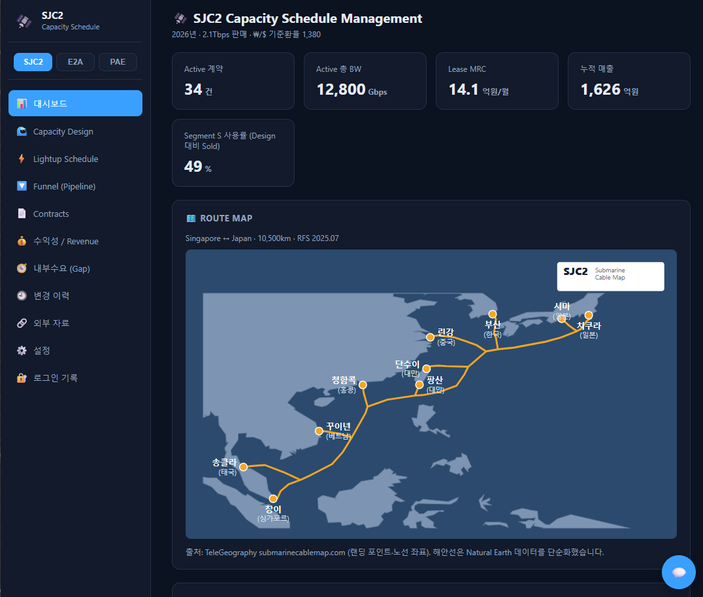
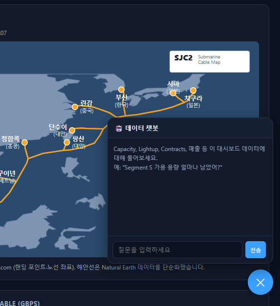

여러 담당자가 각자 다른 파일로 관리하던 구간별 용량·계약·매출 데이터를 하나의 공유 웹앱과 데이터베이스로 통합하고, 그 위에서 바로 질의응답이 가능한 AI 챗봇까지 구축한 프로젝트
어떤 업무의 어떤 불편을 풀려 했나
무엇을, 어떻게 만들었나 (AI 활용 포함)
동작 화면과 정량·정성 기대효과
배운 점(Lesson Learned)과 향후 계획
담당자마다 다른 파일을 보며 일하다 보니, 정작 필요한 순간엔 어떤 숫자가 맞는지 아무도 확신하지 못했다.
Excel 템플릿과 자체 제작 HTML 대시보드로 구간별 설계용량·증설(Lightup) 이력·영업 파이프라인·계약·수익성 데이터를 관리 중
데이터가 담당자 로컬 파일/브라우저 localStorage에만 저장되어 실질적 공유가 안 됨 → 메일·메신저로 파일을 주고받으며 수작업 취합, 병합 중 값이 덮어써지거나 누락
잔여 용량·계약 만료·파이프라인 현황을 확인하려면 여러 탭·파일을 뒤져야 해 조회가 느리고, 의사결정에 쓰는 숫자 자체의 신뢰도가 낮아짐
중간과제 기획서로 "공유 DB화 + 챗봇 응답"을 4일차까지 반드시 되게 할 핵심 범위로 확정
Node.js(Express) + React(Vite)로 기존 HTML 프로토타입의 8개 화면(Dashboard/Capacity/Funnel/Contracts/Pipeline/Lightup/Gap/수익성)을 재구현하고, DB를 SQLite → Supabase Postgres로 마이그레이션해 실제 공유 DB로 전환
고정 PIN 로그인을 사번 기반 admin/viewer 권한 구조로 교체하고, 누가 언제 접속했는지 로그인 기록을 추가
DB에 저장된 데이터 범위 내에서만 답변하는 챗봇을 추가하고, 모노레포 의존성 누락 문제를 esbuild 단일 파일 번들링으로 해결해 정식 배포 완료


웹앱 개발 → Git 커밋 → GitHub Push → Vercel 배포 → Supabase 데이터베이스로 이어지는 일련의 파이프라인을 처음부터 끝까지 경험했고, 그 사이사이 막히는 지점(의존성 번들링, DB 마이그레이션 등)도 Claude와 함께 풀어갈 수 있다는 점을 확실히 인지함. 원본 데이터를 그대로 베끼지 않고 항상 원본 컬럼에서 재계산하는 원칙을 지킨 덕분에, 오히려 원본 Excel의 숨은 수식 누락 버그까지 발견할 수 있었음
사내 LLM 연동을 마무리해 챗봇이 실제 데이터 기반 질의응답을 하도록 고도화